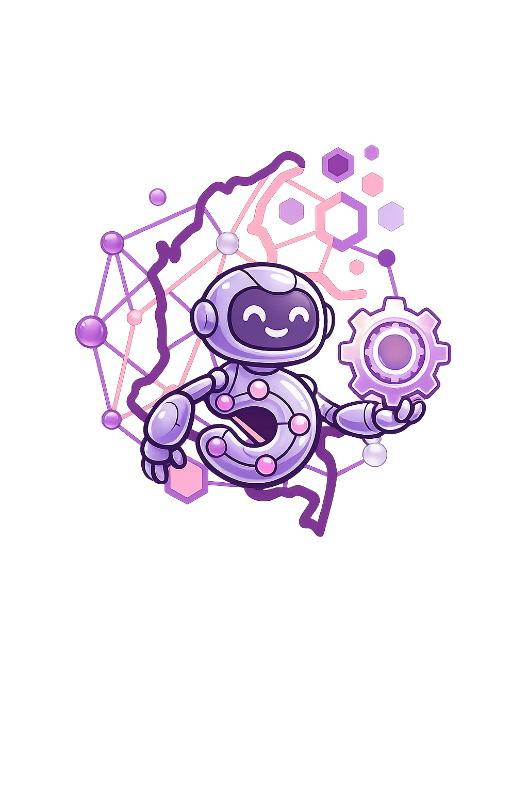

Acceso, Soberanía y productividad.
Llegamos para poner la tecnología al servicio de las personas,
cerrando brechas y generando oportunidades en los territorio.

Colombia 5.0 es el escenario donde convergen las ideas más disruptivas del ecosistema tecnológico nacional e internacional. El encuentro hace parte de la nueva misión de transformación digital que marca el paso de una política de adopción tecnológica a un modelo centrado en las personas, el desarrollo territorial y la competitividad global.
Un espacio donde convergen diferentes actores del ecosistema digital transformando espacios de acción colectiva, innovación, competividad, soberanía tecnológica. El evento consolida el camino del país hacia la Sociedad 5.0, un modelo en el que la tecnología se pone al servicio de las personas, sus necesidades y la intención de cerrar brechas y abrir oportunidades en los territorios.
Fomenta la apropiación digital, el fortalecimiento de clusters de innovación y el conocimiento tecnológico. La iniciativa busca incrementar las capacidades locales y el fortalecimiento de la industria digital nacional, bajo la premisa de que la autonomía en el uso y la producción de tecnología es fundamental para proteger los datos, la información y los intereses estratégicos de Colombia.
Este proyecto surge como una iniciativa dentro de la metodología de clase del instructor Belman Marín, quien nos motiva a construir, paso a paso, un portafolio de proyectos reales. Esta iniciativa no solo refuerza nuestro aprendizaje autónomo, sino que también nos prepara para el entorno laboral al demostrar nuestras competencias y habilidades.
Integra contenido bilingüe (español e inglés), recursos multimedia, un glosario técnico y una reflexión ética sobre el impacto de la tecnología en la sociedad colombiana.
Reflexión ÉticaDesarrollar interfaces web con HTML5, CSS3, JavaScript, Bootstrap5.
Documentar conferencias con contenido bilingüe y multimedia.
Construir un glosario técnico de mínimo 30 términos en inglés.
Reflexionar éticamente sobre IA, datos y automatización.
Descubre los temas más relevantes de Colombia 5.0: diseño UX en videojuegos e Inteligencia Artificial Agéntica.
Ir a Conferencias